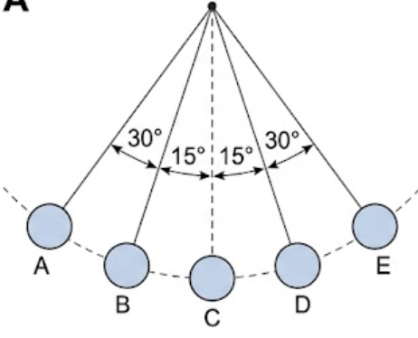
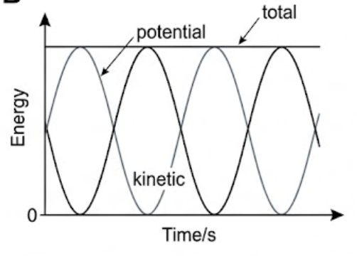
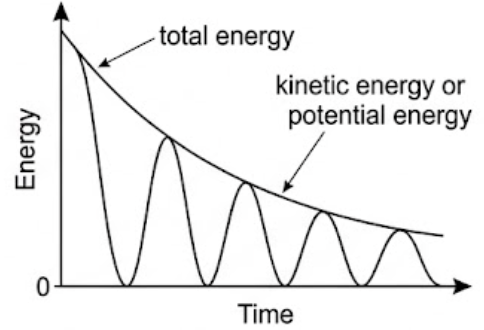
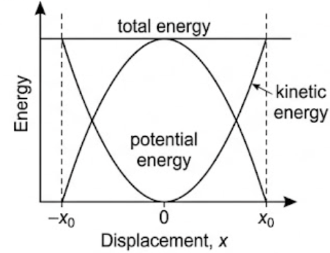
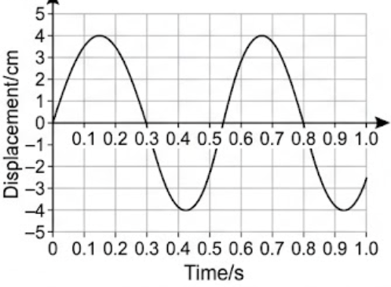
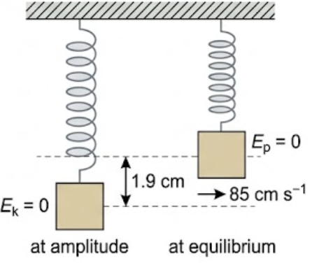

🎯 Hook – the pendulum that never quite comes back
Pull a pendulum aside to position A and hold it there. It has zero kinetic energy and its change of gravitational potential energy, measured from the central position C, is at its greatest. Release it: gravity provides the restoring force, and the pendulum exchanges potential energy for kinetic energy as it swings through B to C.
At C the kinetic energy is maximum and the change in potential energy has fallen to zero. The pendulum then transfers kinetic energy back to potential energy through D to E. At E, like A, it has zero kinetic energy and a maximum change of potential energy. The process repeats every half time period.

🔄 The energy exchange, one cycle at a time
When an object that can oscillate is pushed or pulled away from its equilibrium position, against the action of the restoring force, work is done and potential energy is stored in the oscillator. A spring stores elastic potential energy; a simple pendulum stores gravitational potential energy.
When the object is released it gains kinetic energy and loses potential energy as the restoring force accelerates it back towards equilibrium. Its kinetic energy has a maximum value as it passes through the equilibrium position and, at the same moment, its potential energy is minimised. As it moves away from equilibrium again, kinetic energy decreases — the restoring force now opposes its motion — and potential energy increases.
| Position | Kinetic energy | Potential energy | Speed |
|---|---|---|---|
| Extremes (\(\pm x_0\)) | Zero | Maximum | Zero — momentarily at rest |
| Between extreme and centre | Increasing | Decreasing | Increasing |
| Equilibrium (\(x = 0\)) | Maximum | Minimum (taken as zero) | Maximum |
For a simple pendulum the potential energy is gravitational (see Topic A.3, where \(\Delta E_{\text{p}}\) was used instead of \(E_{\text{p}}\)):
For a mass on a spring the potential energy is elastic (Topic A.3, where the symbol \(E_{\text{H}}\) was used instead of \(E_{\text{p}}\), and \(\Delta x\) instead of \(x\)):
Since that maximum equals the total energy of the oscillation, this shows a general result:
The kinetic energy of the mass is found as in Topic A.3:
📉 Energy against time, and energy against displacement
For perfect SHM the potential and kinetic energy curves are mirror images: each rises as the other falls, and their sum — the total energy — is a horizontal straight line. Both energy curves complete two full cycles for every one oscillation of the mass, because the mass passes through the equilibrium position twice per cycle.

In more realistic situations the energies of the system decrease over time. Energy dissipation from an oscillating system is called damping. The total energy line is then no longer horizontal — it decays, and the peaks of the kinetic and potential curves shrink with it.

Plotting the same energies against displacement rather than time gives a picture that is often more useful in exams. The potential energy is a parabola with its minimum at \(x = 0\), the kinetic energy is the inverted parabola, and the total energy is again a horizontal line at height \(\tfrac{1}{2}kx_0^{\,2}\). The two curves cross exactly halfway, where kinetic and potential energy are equal.

📈 Graphs every examiner uses
| Graph type | Axes (X, Y) | Shape | What to read |
|---|---|---|---|
| Energy–time (perfect SHM) | \(t\) / s, \(E\) / J | Two sinusoidal curves in antiphase, plus a horizontal total | Total energy from the flat line; energy cycles at twice the frequency of the motion |
| Energy–time (damped) | \(t\) / s, \(E\) / J | Decaying total energy curve, oscillating curves decaying beneath it | Fractional energy lost per oscillation; ratio of successive peaks |
| Energy–displacement | \(x\) / m, \(E\) / J | \(E_{\text{p}}\) upward parabola, \(E_{\text{k}}\) downward parabola, total horizontal | Total \(= \tfrac{1}{2}kx_0^{\,2}\); the crossing point is where \(E_{\text{k}} = E_{\text{p}}\) |
| Displacement–time | \(t\) / s, \(x\) / cm | Sinusoidal | Amplitude from the peak, period crest-to-crest, then any displacement at a stated time |

✍️ Worked example C1.5 – from maximum kinetic energy to spring constant
A mass oscillating in a mass–spring system has a maximum kinetic energy of 0.047 J. (a) If its maximum speed was 85 cm s⁻¹, determine its mass. (b) State the maximum value of its potential energy. (c) Determine the spring constant if the amplitude of the oscillation was 1.9 cm.
\(0.047 = \tfrac{1}{2} \times m \times 0.85^2\)
\(m = 0.13\ \text{kg}\)
\(E_{\text{p,max}} = \tfrac{1}{2}kx_0^{\,2}\)
\(0.047 = \tfrac{1}{2} \times k \times (1.9\times10^{-2})^2\)

🔧 Real-world: why dampers exist
Damping is not always the enemy. A car's shock absorber deliberately dissipates the suspension's oscillation energy so the body settles within about one cycle instead of bouncing for many. Building dampers do the same for earthquake and wind oscillations, and a door closer converts the door's kinetic energy into internal energy of a fluid.
The engineering choice is always about how fast the total energy line in Fig 3 should fall.
🚀 HL Extension – energy as a function of \(x\)
Combining \(E_{\text{total}} = \tfrac{1}{2}kx_0^{\,2}\) with \(E_{\text{p}} = \tfrac{1}{2}kx^2\) and \(\omega^2 = k/m\) gives the kinetic energy at any displacement:
which is exactly the downward parabola of Fig 4.
Challenge: at what displacement is the kinetic energy equal to the potential energy? (Answer: \(\tfrac{1}{2}kx^2 = \tfrac{1}{2}k(x_0^2 - x^2)\), so \(x = x_0/\sqrt{2} \approx 0.71x_0\).)
⚠️ Trap corner – common mistakes
| Misconception | Correct view |
|---|---|
| The energy curves have the same period as the motion | Against time they cycle twice per oscillation — the mass reaches maximum speed twice in every cycle |
| Total energy is proportional to the amplitude | It is proportional to the amplitude squared: \(E_{\text{total}} = \tfrac{1}{2}kx_0^{\,2}\) |
| At the extremes the acceleration is zero because the mass has stopped | Velocity and kinetic energy are zero there, but potential energy, restoring force and acceleration are all maximum |
| Energy is "lost" in a damped oscillator | Energy is transferred — dissipated as internal energy of the surroundings and the system, and as sound. The total energy of the universe is unchanged |
| \(E_{\text{p}} = \tfrac{1}{2}kx^2\) works for a pendulum | For a pendulum use \(E_{\text{p}} = mg\Delta h\); the elastic formula belongs to the spring |
| Energy–displacement curves are sinusoidal | They are parabolas — sinusoidal shapes only appear on energy–time axes |
Complete the statements:
\(= 2.69\ \text{rad s}^{-1}\)
✓ \(a = -\omega^2 x\), so \(x = a/\omega^2\)
✓ \(x = 1.00/2.69^2 = 0.139\ \text{m}\) (13.9 cm from equilibrium)
\(= 85\ \text{s}^{-2}\)
✓ \(\omega = 9.2\ \text{rad s}^{-1}\)
✓ (b) \(T = 2\pi/\omega = 2\pi/9.22\)
✓ \(= 0.68\ \text{s}\)
✓ \(\omega = 2\pi/0.790 = 7.95\ \text{rad s}^{-1}\)
✓ \(a = -\omega^2 x = -63.2 \times 0.0623\)
\(= -3.9\ \text{m s}^{-2}\) (3.9 m s⁻² directed back towards equilibrium)
✓ (b) That the motion is simple harmonic — the spring obeys Hooke's law and is not overstretched, and damping is negligible so the period is the same for every oscillation
✓ (b) One complete cycle crest-to-crest (0.15 s to 0.67 s) = 0.52 s (about 0.5 s)
✓ (c) 0.15 s is the time of the first crest, so \(x = +4.0\ \text{cm}\)
✓ (d) \(1.4/0.52 = 2.7\) periods, so the motion is about 0.7 of a cycle past a whole number of cycles
✓ \(x \approx -3.8\ \text{cm}\) — below the equilibrium position, close to the trough
✓ A sine curve of peak 5.0 cm with crests 2.0 s apart, drawn for two full cycles (4.0 s)
✓ (b) A second sine curve, same peak 5.0 cm, but crests 1.0 s apart — four cycles in the same 4.0 s
✓ (c) A third curve of peak 2.5 cm
✓ with the same 2.0 s period as the first
✓ shifted along the time axis by 0.50 s (a phase difference of \(\pi/2\) rad)
✓ Velocity axis from −4.0 to +4.0 cm s⁻¹, a cosine curve starting at \(+4.0\) cm s⁻¹ with crests 0.25 s apart
✓ (b i) Displacement: sinusoidal, starting at zero, lagging the velocity by \(T/4 = 0.0625\ \text{s}\) — a phase difference of \(\pi/2\) rad
✓ peaking where the velocity curve crosses zero
✓ (b ii) Acceleration: sinusoidal, in antiphase with displacement (\(\pi\) rad), zero where the displacement is zero
✓ Amplitudes of the three curves are arbitrary and should not be compared
\(= 0.100 \times 9.8 \times 0.050\)
✓ \(= 0.049\ \text{J}\)
✓ (b) \(T = 1/1.25 = 0.80\ \text{s}\), so 1.6 s contains two complete oscillations
✓ Axes "Potential energy / J" (0 to 0.049) and "Time / s" (0 to 1.6); curve starts at the maximum 0.049 J at \(t = 0\)
✓ falls to zero at 0.20 s and returns to 0.049 J at 0.40 s — four complete energy cycles in 1.6 s, never negative
✓ (c) Maximum kinetic energy = maximum potential energy = 0.049 J
✓ \(v = \sqrt{2E_{\text{k}}/m} = \sqrt{2\times0.049/0.100}\)
\(= 0.99\ \text{m s}^{-1}\)
✓ and a small amount is transferred away as sound
✓ (b) At \(t = 0\) the mass is at the equilibrium position, where its speed is greatest — so the line starting at a maximum is kinetic energy
✓ (c) Read the total energy at the end of each successive oscillation and calculate the ratio of each value to the one before
✓ If those ratios are equal, the decay is by a constant fraction (exponential); a 90% overall fall in six oscillations corresponds to a ratio of \(0.10^{1/6} \approx 0.68\), i.e. about 32% lost per oscillation
✓ A straight line on a graph of \(\ln(\text{total energy})\) against number of oscillations confirms it
✓ so it does work on the mass, transferring stored elastic potential energy to kinetic energy
✓ at the equilibrium position the displacement, and so the stored potential energy, is zero, so all of the (constant) total energy is kinetic
✓ (b) \(E_{\text{total}} = \tfrac{1}{2}kx_0^{\,2}\), so the total energy is proportional to the square of the amplitude
✓ because the elastic potential energy stored at maximum displacement depends on \(x_0^2\)
✓ so doubling the amplitude requires four times the energy input
✓ Potential energy: upward parabola, zero at \(x = 0\), rising to the total energy at \(\pm x_0\)
✓ Kinetic energy: the inverted parabola, maximum at \(x = 0\), zero at \(\pm x_0\)
✓ Total energy: horizontal line at \(\tfrac{1}{2}kx_0^{\,2}\); the two curves cross at \(x = \pm x_0/\sqrt{2}\)
✓ (b) Against time both energies are sinusoidal rather than parabolic
✓ and each completes two cycles per oscillation of the mass, while the total energy is again a horizontal line
✓ For a real oscillator resistive forces dissipate energy — damping — so the total energy decays and the peaks of the kinetic and potential curves shrink with it
✓ The frequency stays essentially unchanged while the amplitude falls
✓ Deliberate damping example: a car's shock absorber dissipates the suspension energy within about one cycle, keeping the tyres on the road (also acceptable: building dampers, door closers, measuring-balance damping)